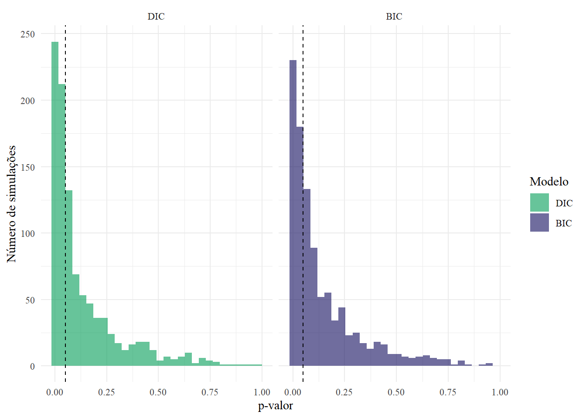
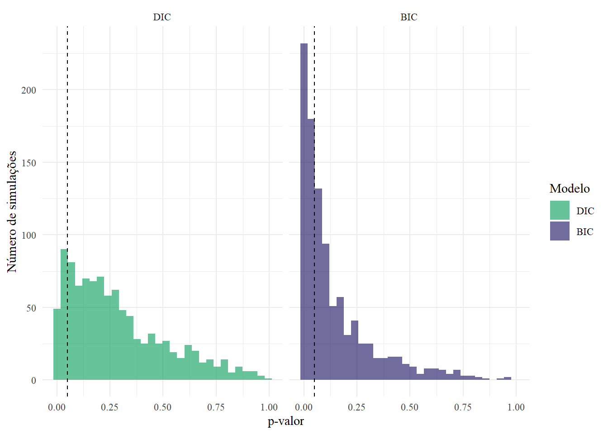
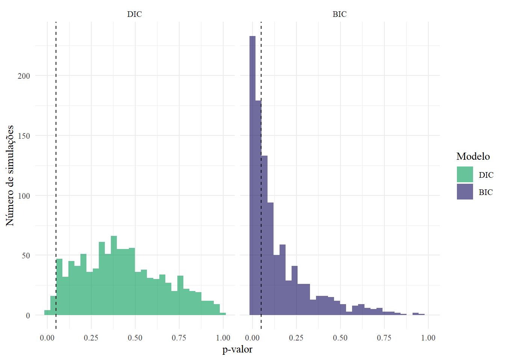
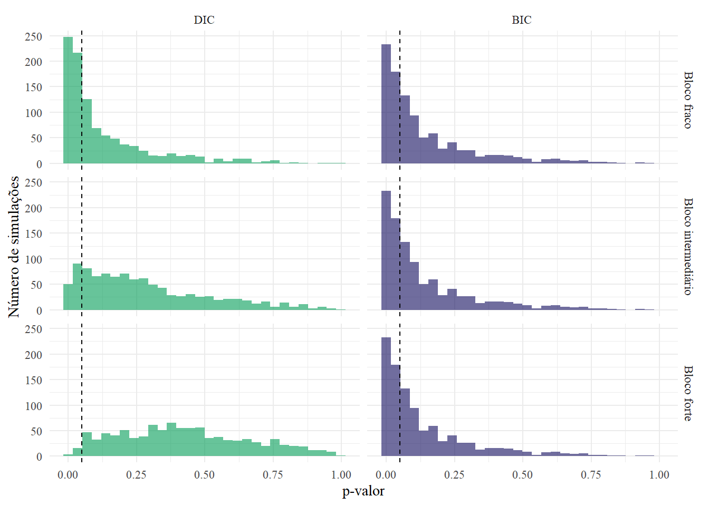
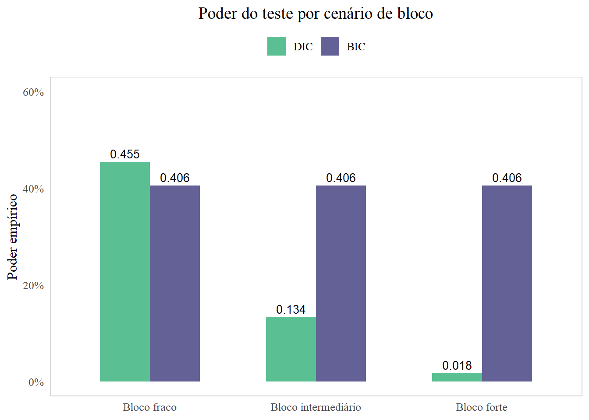
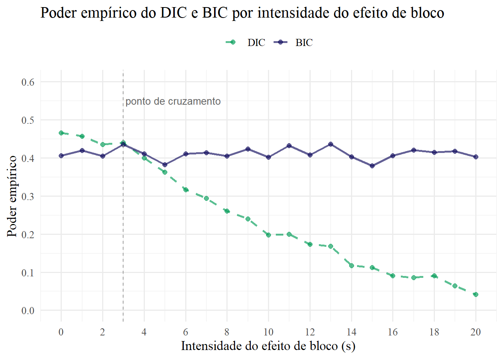

| Fonte de Variação | GL | SQ | QM | F |
|---|---|---|---|---|
| Tratamento | t-1 | SQTrat | QMTrat | QMTrat/QMRes |
| Resíduo | N-1 | SQRes | QMRes | - |
| Total | N-t | SQTotal | - | - |
Poder e ANOVA: uma simulação de desempenho dos delineamentos DIC e BIC
1 Contextualização
Entre os delineamentos mais utilizados no planejamento de experimentos estão o delineamento inteiramente casualizado (DIC) e o delineamento em blocos completos casualizados (BIC). Ambos avaliam os efeitos de tratamento - o que se aplica nas unidades experimentais - por meio da análise de variância (ANOVA). É natural o surgimento de dúvidas em relação à escolha do melhor delineamento, por isso é essencial compreender o desempenho de cada um deles dado o contexto específico a fim de conduzir um experimento adequadamente.
No delineamento inteiramente casualizado, toda variação não explicada pelos tratamentos é absorvida pelo erro. Já o BIC introduz uma estrutura de blocos que, quando relevante, retira do erro uma parcela da variabilidade — reduzindo o quadrado médio dele e aumentando a estatística F do teste. Por essa razão, o BIC pode ter maior poder que o DIC. Porém, quando o efeito de bloco é fraco ou inexistente, o BIC perde graus de liberdade sem qualquer ganho correspondente, penalizando o teste. Portanto, nem sempre o delineamento em blocos é a melhor escolha para o experimento, já que não apresenta melhor eficácia que o delineamento inteiramente casualizado em todos os casos.
O poder do teste — probabilidade de rejeitar a hipótese nula quando ela é falsa — depende simultaneamente da magnitude dos efeitos de tratamento, da variabilidade do erro e da relevância da estrutura de blocos. Como esses fatores raramente são conhecidos antes do experimento, a simulação computacional permite investigar como o poder se comporta em diferentes cenários fixados com diferenciação dos blocos.
Dessa forma, o objetivo desse trabalho é comparar o poder empírico do DIC e do BIC por meio de simulações de Monte Carlo. Por meio dessas simulações, em que são fixados parâmetros e variadas as intensidades dos efeitos de bloco, pode-se discutir precisamente o comportamento dos delineamentos, evidenciando principalmente o ponto em que BIC passa a ser preferível em relação ao DIC para determinado experimento, dado um panorama em que o efeito de tratamento pode ser facilmente confundido com o resíduo.
2 Teoria
2.1 Modelos DIC e BIC
2.1.1 Modelo DIC
\[ Y_{ij} = \mu + \tau_i + \varepsilon_{ij}, \quad i = 1, \dots, k;\; j = 1, \dots, r \]
Onde:
- \(Y_{ij}\): observação do \(i\)-ésimo tratamento na \(j\)-ésima repetição
- \(\mu\): média geral
- \(\tau_i\): efeito do \(i\)-ésimo tratamento
- \(\varepsilon_{ij} \sim N(0, \sigma^2)\): erro aleatório
2.1.2 Modelo BIC
\[ Y_{ij} = \mu + \tau_i + \beta_j + \varepsilon_{ij}, \quad i = 1, \dots, k;\; j = 1, \dots, b \]
Onde:
- \(Y_{ij}\): observação do \(i\)-ésimo tratamento no \(j\)-ésimo bloco
- \(\mu\): média geral
- \(\tau_i\): efeito do \(i\)-ésimo tratamento
- \(\beta_j\): efeito do \(j\)-ésimo bloco
- \(\varepsilon_{ij} \sim N(0, \sigma^2)\): erro aleatório
2.1.2.1 Suposições a serem satisfeitas
\(\varepsilon_{ij}\) independentes
\[ \varepsilon_{ij} \sim N(0,\sigma^2) \]
\[ \sum_{i=1}^{t}\tau_i = 0 \]
\[ \sum_{i=1}^{j}\beta_j = 0 \]
2.1.3 ANOVA: Análise de Variância
A ANOVA decompõe a variação total dos dados em fontes identificáveis, avaliando se a variação atribuída aos tratamentos supera o ruído dos resíduos. Para isso, são calculadas somas de quadrados e quadrados médios que são utilizadas na operação da estatística de teste F, como ilustrado nas tabelas:
| Fonte de Variação | GL | SQ | QM | F |
|---|---|---|---|---|
| Tratamento | t-1 | SQTrat | QMTrat | QMTrat/QMRes |
| Bloco | b-1 | SQBloco | QMBloco | QMBloco/QMRes |
| Resíduo | (t-1)(b-1) | SQRes | QMRes | - |
| Total | tb-1 | SQTotal | - | - |
2.2 Teste de Hipóteses
2.2.1 Efeito de tratamento: DIC e BIC
2.2.1.1 Hipótese nula
Os efeitos de tratamento são iguais \[ H_0: \tau_1 = \tau_2 = \tau_3 = \tau_4 = 0 \]
2.2.1.2 Hipótese alternativa
Pelo menos um efeito de tratamento difere de zero \[ H_1: \exists \, i \text{ tal que } \tau_i \neq 0 \]
Como deseja-se avaliar o poder do teste, a probabilidade de rejeitar a hipótese nula dado que ela é falsa, essa hipótese é rejeitada, portanto considera-se que pelo menos um efeito de tratamento difere de zero.
No caso do BIC, as mesmas hipóteses são consideradas para o efeito do bloco:
2.2.2 Efeito de bloco: BIC
2.2.2.1 Hipótese nula
Os efeitos de bloco são iguais
\[ H_0: \beta_1 = \beta_2 = \beta_3 = \beta_4 = 0 \]
2.2.2.2 Hipótese alternativa
Pelo menos um efeito de bloco difere de zero \[ H_1: \exists \, j \text{ tal que } \beta_j \neq 0 \]
2.2.3 Poder de teste
Para calcular o poder de teste, parte-se da estatística F de Snedecor, calculada utilizando a ANOVA. Quando a estatística F calculada é maior que a F crítica, rejeita-se a hipótese nula.
2.2.3.1 Cenários possíveis
2.2.3.1.1 Cenário de poder alto
Quando o poder é alto, como 0.9, o teste rejeita a hipótese nula quando ela é falsa 90% das vezes, ou seja, os efeitos de tratamento são detectados com alta frequência e, portanto, são grandes em relação ao erro. Conclui-se que a variância é pequena, a quem o erro está diretamente relacionado. Nesse cenário, tanto o DIC quanto o BIC rejeitam H0 quase sempre - a variância é tão pequena que o sinal dos tratamentos é dominante independentemente do modelo controlar ou não o efeito dos blocos.
2.2.3.1.2 Cenário de poder baixo
Quando o poder é baixo, como 0.2, o teste rejeita a hipótese nula quando ela é falsa apenas 20% das vezes, ou seja, os efeitos de tratamento raramente são detectados. A variância é grande, fazendo com que o ruído domine o sinal dos tratamentos. Nesse cenário, tanto o DIC quanto o BIC falham — mesmo o BIC, ao isolar o efeito dos blocos, não consegue compensar um erro residual tão elevado.
2.2.3.1.3 Cenário de poder intermediário
Quando o poder é intermediário, como 0.4-0.5, o teste rejeita a hipótese nula quando ela é falsa de 40 a 50% das vezes. A variância é moderada, equilibrando sinal de tratamento e ruído. Nesse cenário, é preciso avaliar o sinal de bloco para chegar a conclusão da melhor escolha de delineamento. A partir de diferentes casos de intensidade de blocos, portanto, é possível visualizar a diferença de desempenho entre os modelos.
Assim, utiliza-se o cenário de poder intermediário para a simulação.
3 Simulações
3.1 Fixando valores
tratamentos <- 4
blocos <- 4
n_obs <- tratamentos * blocos
trat <- rep(1:tratamentos, times = blocos)
bloco <- rep(1:blocos, each = tratamentos)
mu <- 100
tau <- c(0, 4, 8, -12) Em que n_obs é o número de observações, mu é a média geral das observações e tau o efeito de tratamento, necessariamente significativo.
3.1.1 Escolha da variância
3.1.1.1 Pelo f de Cohen
O f de Cohen é uma medida de tamanho de efeito para ANOVA, ou seja, ela quantifica o quanto os tratamentos se diferenciam entre si em relação à variância. Como o poder intermediário é alcançado por meio dessa relação, espera-se que um f de Cohen intermediário, como 0.667, revele uma variância de um cenário de poder intermediário. \[ f = \sqrt{\frac{\bar{\tau^2}}{\sigma^2}} = \sqrt{\frac{\frac{1}{t}\sum_{i}\tau_i^2}{\sigma^2}} \]
Cálculo:
f_Cohen <- 0.667
(sigma2 <- mean(tau^2) / f_Cohen^2) [1] 125.87413.1.1.2 Por simulação
Calcula o poder entre 0.4 e 0.5 para gerar variâncias potenciais.
set.seed(123)
nsim <- 500
alpha <- 0.05
sigmas <- seq(115, 135, by = 1)
poderes <- c()
poderes <- sapply(sigmas, function(s) {
rejeitou <- replicate(nsim, {
y <- mu + tau[trat] + rnorm(n_obs, 0, sqrt(s))
p <- summary(aov(y ~ factor(trat)))[[1]][["Pr(>F)"]][1]
p < alpha
})
mean(rejeitou)
})
# Resultado
resultado <- data.frame(sigma2 = sigmas, poder = poderes)
resultado[resultado$poder >= 0.40 & resultado$poder <= 0.50, ] sigma2 poder
1 115 0.498
3 117 0.482
4 118 0.494
5 119 0.460
6 120 0.480
7 121 0.474
8 122 0.450
9 123 0.452
10 124 0.448
11 125 0.460
12 126 0.488
13 127 0.404
14 128 0.446
15 129 0.462
16 130 0.434
17 131 0.432
18 132 0.404
19 133 0.432
20 134 0.420
21 135 0.4264 Efeitos de bloco
Considera-se a intensidade dos efeitos de bloco: fraco, intermediário e forte.
4.1 Significância - proporção de detecção do efeito de bloco
Para comparar o poder entre os modelos DIC e BIC, foi realizada uma simulação que considera três cenários de efeito de bloco: fraco, intermediário e forte. Dados os valores já fixados, um efeito de bloco fraco deriva de uma significância fraca do BIC, assim como um efeito de bloco intermediário deriva de uma significância intermediária e da mesma forma para um bloco forte. A fim de estimar um vetor beta de efeitos de bloco adequado para cada um dos três cenários, partiu-se de valores de significância para 1000 replicações ao nível de significância de teste alpha de 5%. Para isso, é definida uma sequência de desvios para beta.
4.1.1 Normalidade
É importante sinalizar que considera-se o efeito do j-ésimo bloco como uma variável normal para a simulação, garantindo a suposição inicialmente apontada. Sua distribuição é dada por: \[ \beta_{j} \sim N(0,s^2) \]
Essa escolha é justificada por: - Princípio da máxima entropia: a distribuição normal é a menos restritiva, qualquer outra distribuição introduziria suposições adicionais às já definidas pelo modelo. - Teorema Central do Limite: à medida que o número de replicações cresce na simulação, a distribuição amostral do poder empírico converge para uma normal independentemente da distribuição geradora dos beta.
4.1.2 Desvios
set.seed(123)
desvios_beta <- seq(0, 30, by = 0.5)
prop_bloco <- sapply(desvios_beta, function(desvio) {
mean(replicate(1000, {
beta_orig <- rnorm(blocos, 0, sd = desvio)
beta <- beta_orig - mean(beta_orig)
erro <- rnorm(n_obs, 0, sqrt(sigma2))
y <- mu + tau[trat] + beta[bloco] + erro
p <- summary(aov(y ~ factor(trat) + factor(bloco)))[[1]]["factor(bloco)", "Pr(>F)"]
p < 0.05
}))
})Em cada cenário, um intervalo de proporção (significância do bloco) é definido para a escolha de um desvio.
# Desvios
cat("Fraco:\n"); print(desvios_beta[prop_bloco < 0.10])Fraco:[1] 0.0 0.5 1.0 1.5 2.0 2.5 3.0 3.5cat("Intermediário:\n"); print(desvios_beta[prop_bloco >= 0.50 & prop_bloco <= 0.70])Intermediário:[1] 11.5 12.0 12.5 13.0 13.5 14.0cat("Forte:\n"); print(desvios_beta[prop_bloco > 0.75])Forte: [1] 16.5 17.0 17.5 18.0 18.5 19.0 19.5 20.0 20.5 21.0 21.5 22.0 22.5 23.0 23.5
[16] 24.0 24.5 25.0 25.5 26.0 26.5 27.0 27.5 28.0 28.5 29.0 29.5 30.04.1.3 Vetores
Após a escolha do desvio, são gerados vetores beta fixos - efeitos de bloco - a fim de realizar a simulação que compara os delineamentos DIC e BIC em relação ao poder.
# Função
gera_beta <- function(blocos, desvio, seed = 123) {
set.seed(seed)
beta_orig <- rnorm(blocos, 0, sd = desvio)
beta_orig - mean(beta_orig)
}# Vetores resultantes
cat("Fraco:\n"); (beta_fraco <- gera_beta(blocos, desvio = 1))Fraco:[1] -0.7701165 -0.4398184 1.3490674 -0.1391325cat("Intermediário:\n"); (beta_inter <- gera_beta(blocos, desvio = 11.5))Intermediário:[1] -8.856340 -5.057911 15.514275 -1.600024cat("Forte:\n"); (beta_forte <- gera_beta(blocos, desvio = 17)) Forte:[1] -13.091981 -7.476912 22.934146 -2.3652534.2 Testes de poder
4.2.1 Efeito de bloco fraco
4.2.1.1 Cálculo do poder
set.seed(123)
sim_bfraco <-
replicate(1000, {
erro <- rnorm(n_obs, 0, sqrt(sigma2))
y <- mu + tau[trat] + beta_fraco[bloco] + erro
p_bic <- summary(aov(y ~ factor(trat) + factor(bloco)))[[1]]["factor(trat)", "Pr(>F)"]
p_dic <- summary(aov(y ~ factor(trat)))[[1]]["factor(trat)", "Pr(>F)"]
c(bic = p_bic < 0.05, dic = p_dic < 0.05,
p_bic = p_bic, p_dic = p_dic)
})
cat("Poder para efeito de bloco fraco:\n");Poder para efeito de bloco fraco:cat("DIC:\n"); (poder_dic_bfraco <- mean(sim_bfraco["dic", ]))DIC:[1] 0.455cat("BIC:\n"); (poder_bic_bfraco <- mean(sim_bfraco["bic", ]))BIC:[1] 0.406No cenário de bloco fraco, os dois modelos apresentaram poder similar, com o DIC levemente superior ao BIC. Quando o efeito de bloco é irrelevante, o BIC não se beneficia do controle local que propõe e a perda de graus de liberdade para estimar o efeito de bloco prejudica o seu poder, fazendo desse resultado o esperado.
4.2.1.2 Distribuição p-valor
pvalores_fraco <- data.frame(
p = c(sim_bfraco["p_dic", ], sim_bfraco["p_bic", ]),
Modelo = rep(c("DIC", "BIC"), each = 1000)
)
pvalores_fraco$Modelo <- factor(pvalores_fraco$Modelo, levels = c("DIC", "BIC"))
ggplot(pvalores_fraco, aes(x = p, fill = Modelo)) +
geom_histogram(alpha = 0.6, bins = 30, position = "identity") +
geom_vline(xintercept = 0.05, linetype = "dashed") +
scale_fill_manual(values = c(BIC = "#110C5E", DIC = "#029C57")) +
labs(x = "p-valor", y = "Número de simulações") +
facet_wrap(~Modelo) +
theme_minimal(base_family = "serif")
O gráfico mostra que, no cenário de bloco fraco, aproximadamente 40% dos p-valores de ambos os modelos ficaram abaixo de alpha = 0,05, indicando poder moderado para os dois delineamentos, como verificado.
4.2.2 Efeito de bloco intermediário
4.2.2.1 Cálculo do poder
Poder para efeito de bloco intermediário:DIC:[1] 0.134BIC:[1] 0.406No cenário de bloco intermediário, o BIC apresenta poder aproximadamente 3 vezes maior que o DIC. Quando o efeito de bloco é moderado, o DIC absorve essa variação no resíduo, inflando o quadrado médio do erro e reduzindo a estatística F dos tratamentos. O BIC isola o efeito de bloco antes de testar os tratamentos, reduzindo o resíduo e aumentando o poder do teste — evidenciando a vantagem do controle local quando a estrutura de blocos é relevante.
4.2.2.2 Distribuição p-valor

O gráfico mostra que, no cenário de efeito de bloco intermediário, aproximadamente 40% dos p-valores do BIC ficaram abaixo do nível de significância alpha = 0,05 contra apenas 13% do DIC. A concentração de p-valores pequenos é visivelmente maior para o BIC antes da linha tracejada, confirmando que o controle local melhora substancialmente a capacidade de detectar o efeito de tratamento quando o bloco tem relevância moderada.
4.2.3 Efeito de bloco forte
4.2.3.1 Cálculo do poder
Poder para efeito de bloco forte:DIC:[1] 0.018BIC:[1] 0.406No cenário de bloco forte, o BIC manteve o poder em 0,406, enquanto o DIC caiu para 0,018 — aproximadamente 23 vezes menor. Quando o efeito de bloco é grande, o DIC absorve toda essa variação no resíduo, inflando o quadrado médio do erro a ponto de tornar o teste de tratamento quase incapaz de detectar diferenças reais. O BIC, ao isolar e remover o efeito de bloco antes de testar os tratamentos, preserva o poder do teste no mesmo patamar dos cenários anteriores.
4.2.3.2 Distribuição p-valor

O gráfico mostra que, no cenário de bloco forte, a maioria dos p-valores no modelo BIC se concentra abaixo de 0,05, indicando poder moderado (~40%). Já para DIC, quase todos os valores estão acima de 0,05, ou seja, O DIC apresenta poder significantemente inferior ao BIC.
4.2.4 Comparação das distribuições p-valor

4.2.5 Análise de convergência
set.seed(123)
replicas <- c(100, 1000, 10000)
simula_replicas <- function(beta, replicas) {
lapply(replicas, function(B) {
sim <- replicate(B, {
erro <- rnorm(n_obs, 0, sqrt(sigma2))
y <- mu + tau[trat] + beta[bloco] + erro
p_bic <- summary(aov(y ~ factor(trat) + factor(bloco)))[[1]]["factor(trat)", "Pr(>F)"]
p_dic <- summary(aov(y ~ factor(trat)))[[1]]["factor(trat)", "Pr(>F)"]
c(bic = p_bic < 0.05, dic = p_dic < 0.05)
})
data.frame(
replicacoes = B,
poder_dic = mean(sim["dic", ]),
poder_bic = mean(sim["bic", ])
)
})
}
res_rep <- rbind(
cbind(cenario = "Bloco fraco", do.call(rbind, simula_replicas(beta_fraco, replicas))),
cbind(cenario = "Bloco intermediário", do.call(rbind, simula_replicas(beta_inter, replicas))),
cbind(cenario = "Bloco forte", do.call(rbind, simula_replicas(beta_forte, replicas)))
)| replicacoes | poder_dic | poder_bic |
|---|---|---|
| 100 | 0.4600 | 0.390 |
| 1000 | 0.4470 | 0.403 |
| 10000 | 0.4477 | 0.412 |
| replicacoes | poder_dic | poder_bic | |
|---|---|---|---|
| 4 | 100 | 0.1300 | 0.3800 |
| 5 | 1000 | 0.1280 | 0.4080 |
| 6 | 10000 | 0.1318 | 0.4145 |
| replicacoes | poder_dic | poder_bic | |
|---|---|---|---|
| 7 | 100 | 0.0400 | 0.4000 |
| 8 | 1000 | 0.0230 | 0.4240 |
| 9 | 10000 | 0.0221 | 0.4116 |
Em todos os cenários, os valores de poder se estabilizam conforme o número de réplicas aumenta. De 100 para 10000 replicações, a variação é pequena, sustentando o uso padrão de 1000 repetições como suficiente para estimativas confiáveis.
4.2.6 Poder por cenário de bloco

Para o DIC, o efeito de bloco não considerado pelo modelo é absorvido integralmente pelo resíduo, inflando o quadrado médio do erro e reduzindo a estatística F — quanto maior o efeito de bloco, menor o poder detectado. O BIC, por sua vez, isola o efeito de bloco antes de testar os tratamentos, de modo que o resíduo reflete apenas o erro aleatório próprio ao experimento. Como a variância do erro é uma propriedade do processo experimental — independente da estrutura de blocos — e os efeitos de tratamento foram fixados igualmente nos três cenários, o quadrado médio do tratamento e do erro no BIC permanecem os mesmos independentemente da intensidade do bloco. Dessa forma, o poder do BIC se mantém estável em torno de 0,41 nos três cenários: não porque a intensidade da blocagem não auxilia, mas porque o erro pré-definido existe e é igual para todos os cenários.
4.3 Escolher DIC ou BIC: poder por cenário de intensidade de bloco
set.seed(123)
intensidades <- seq(0, 20, by = 1)
resultados <- lapply(intensidades, function(s) {
sim <- replicate(1000, {
beta_orig <- rnorm(blocos, 0, sd = s)
beta <- beta_orig - mean(beta_orig)
erro <- rnorm(n_obs, 0, sqrt(sigma2))
y <- mu + tau[trat] + beta[bloco] + erro
p_bic <- summary(aov(y ~ factor(trat) + factor(bloco)))[[1]]["factor(trat)", "Pr(>F)"]
p_dic <- summary(aov(y ~ factor(trat)))[[1]]["factor(trat)", "Pr(>F)"]
c(bic = p_bic < 0.05, dic = p_dic < 0.05)
})
data.frame(
intensidade = s,
poder_dic = mean(sim["dic", ]),
poder_bic = mean(sim["bic", ])
)
})
df <- do.call(rbind, resultados)
5 Conclusão
Por meio das simulações, é possível concluir que a escolha entre DIC e BIC depende diretamente da relevância dos blocos no experimento. Quando o efeito de bloco é irrelevante, o DIC apresenta poder ligeiramente superior — o BIC consome graus de liberdade sem benefício correspondente. Conforme a intensidade do bloco aumenta, o DIC perde poder progressivamente enquanto o BIC permanece estável, pois isola o efeito de bloco antes de testar os tratamentos.
O ponto de cruzamento em s aproximadamente igual a 3 delimita a fronteira a partir da qual o BIC passa a ser preferível nesse caso — evidenciando que, em experimentos com heterogeneidade relevante entre unidades experimentais, o controle local é essencial para preservar o poder do teste.
A fim de realizar uma justa comparação entre os delineamentos, fixou-se parâmetros fundamentais, tais como os efeitos de tratamento e a variância. Desse modo, o poder do BIC se manteve estável em torno de 0,41 nos três cenários. Para que ele apresentasse poder crescente conforme o aumento da intensidade do bloco, seria necessário: - Aumentar os efeitos de tratamento ou - Aumentar o número de blocos ou - Reduzir a variância do erro fatores que, em conjunto com a intensidade do bloco, determinam o desempenho relativo dos delineamentos. A combinação desses fatores introduz diferentes possibilidades de panoramas gerais que não foram considerados nesse trabalho.